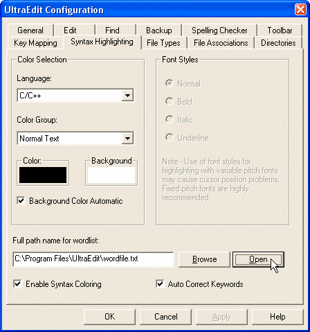

Since the WME script is very similar to JavaScript, you can usually use the JavaScript syntax highlighting. Almost any programmer’s editor supports it. For some basic highlighting even the C or C++ highlighting will do.
In UltraEdit, you can change the WME script file highlighting the following way:
1) Go to the “Advanced” menu and select the “Configuration…” item.

The UltraEdit should now recognize the “.script” and “.inc” files as JavaScript scripts and color them correctly.